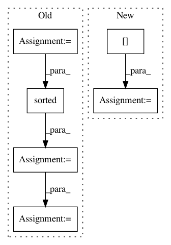

a81db6daadd1304e96916c34a894d83dd4dc75bd,skopt/wrappers/scikit_learn.py,SkoptSearchCV,step,#SkoptSearchCV#,248
Before Change
cv = skms.check_cv(self.cv, y, classifier=skms.is_classifier(self.estimator))
self.scorer_ = skms.check_scoring(self.estimator, scoring=self.scoring)
pd = self.param_distributions
if self.optimizer is None:
dimensions = [pd[k] for k in sorted(pd.keys())]
self.optimizer = Optimizer(dimensions, GaussianProcessRegressor())
params = self.optimizer.ask()
params_dict = {k: v for k,v in zip(sorted(pd.keys()), params)}
cv_iter = list(cv.split(X, y, groups))
After Change
if key not in self.optimizer:
self.optimizer[key] = self._make_optimizer(param_space)
optimizer = self.optimizer[key]
params = optimizer.ask()
params_dict = self._skopt_to_dict(param_space, params)
In pattern: SUPERPATTERN
Frequency: 3
Non-data size: 6
Instances
Project Name: scikit-optimize/scikit-optimize
Commit Name: a81db6daadd1304e96916c34a894d83dd4dc75bd
Time: 2017-06-28
Author: iaroslav.email@gmail.com
File Name: skopt/wrappers/scikit_learn.py
Class Name: SkoptSearchCV
Method Name: step
Project Name: Pinafore/qb
Commit Name: e79449afe45f4da6f1756a7d92bdd3cd6618c638
Time: 2018-04-25
Author: sjtufs@gmail.com
File Name: qanta/buzzer/util.py
Class Name:
Method Name: process_question
Project Name: ylongqi/openrec
Commit Name: 93f84bee4d0c9e082c5ef04fa5f4a0886cdad2db
Time: 2018-09-26
Author: ylongqi@gmail.com
File Name: openrec/recommenders/recommender.py
Class Name: Recommender
Method Name: _optimistic_restore